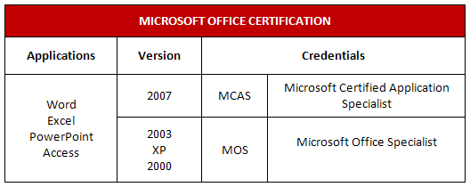

Tables organize information into rows and columns to display data in an easy-to-read format. Tables are excellent for presenting essential facts and figures from your work so that your readers can quickly focus on the information you wish to emphasize. You may have used a table to create a personal phone list, or to record your science lab results for school. In the work world, businesses use tables to analyze budgets, compare sales figures, and report results to stakeholders.

Microsoft product screen shot(s) reprinted with permission from Microsoft Corporation.
In INF1030: Word Processing 1 you learned how to create a basic table. In INF2050: Word Processing 2 you will expand those skills so that you can build more complex tables with more functionality. Developing your skills will increase your productivity and versatility, and help you create professional-looking documents that get results.
In this training room you will